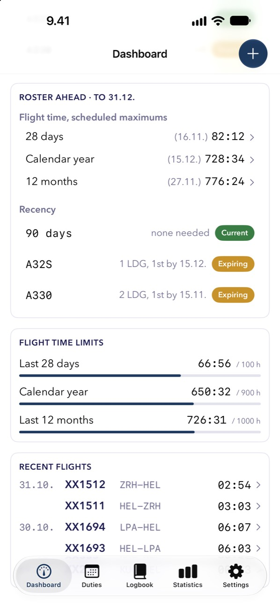

Before duty
Recency and limits at a glance.
The Dashboard shows your recency and your flight time for 28 days, the calendar year and 12 months. Add it to your Home or Lock Screen as a widget.
- Green, amber and red as you near a limit
- Separate recency for multi-type flying
- Optional reminders, worked out on your device
For Finnair and Norra pilots, at the moment: paste your roster for your next duty, rostered drafts, and the landings and flight time the roster ahead adds up to.
Duty, rest and FDP. Duty time, rest and flight duty period checks, for Finnair and Norra pilots at the moment. They help you check; your operations manual has the final word.
